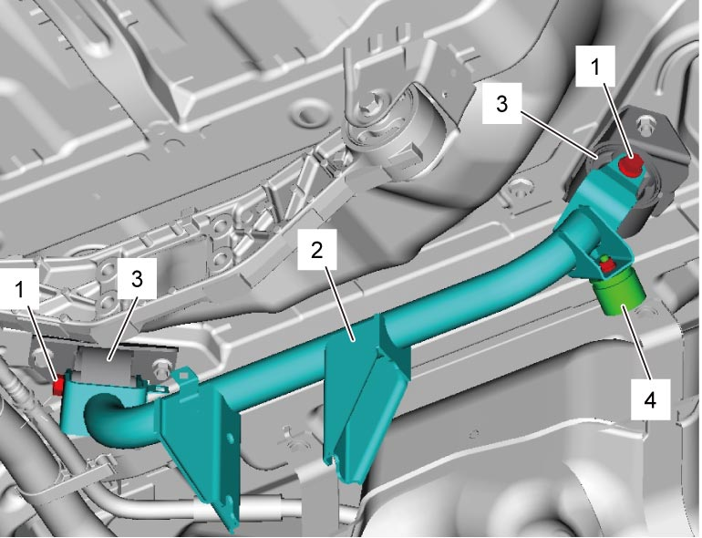
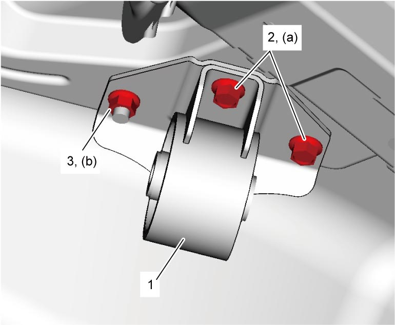
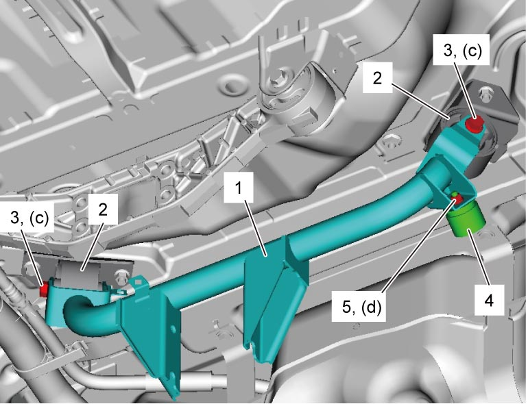

3B
| Rear Differential Front Mounting Removal and Installation |
Removal
1)Remove rear differential assembly. 
2)Remove rear differential mounting arm bolts (1), and then remove rear differential mounting arm (2) from rear differential front mounting (3).
3)Remove mass damper (4) from rear differential mounting arm, if necessary.


 "Expand image")
4)Remove rear differential front mounting bolts (1) and nut (2), and then remove rear differential front mounting (3).

 "Expand image")
Installation
1)Install rear differential front mounting (1) to vehicle, and then tighten its bolts (2) and nut (3) to specified torque.
Rear differential front mounting nut (b): 50 N·m (5.1 kgf-m, 37.0 lbf-ft)
Tightening torque
Rear differential front mounting bolt (a): 50 N·m (5.1 kgf-m, 37.0 lbf-ft)Rear differential front mounting nut (b): 50 N·m (5.1 kgf-m, 37.0 lbf-ft)

 "Expand image")
2)Install rear differential mounting arm (1) to rear differential front mountings (2) and tighten its bolts (3) to specified torque.
3)If removed, install mass damper (4) to rear differential mounting arm and tighten its nut (5) to specified torque.

 "Expand image")
4)Install rear differential assembly.